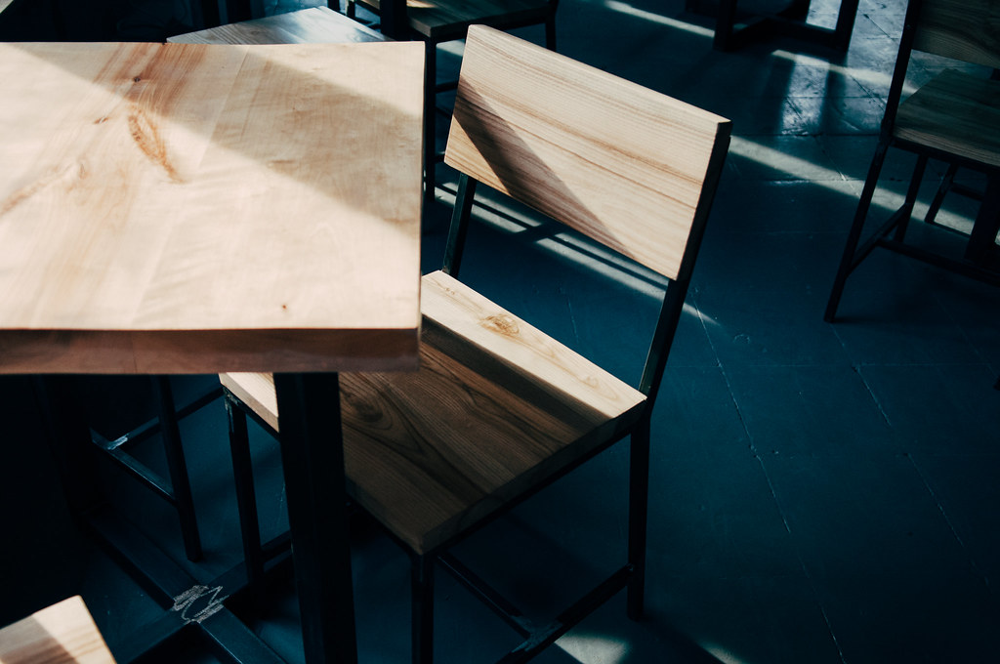
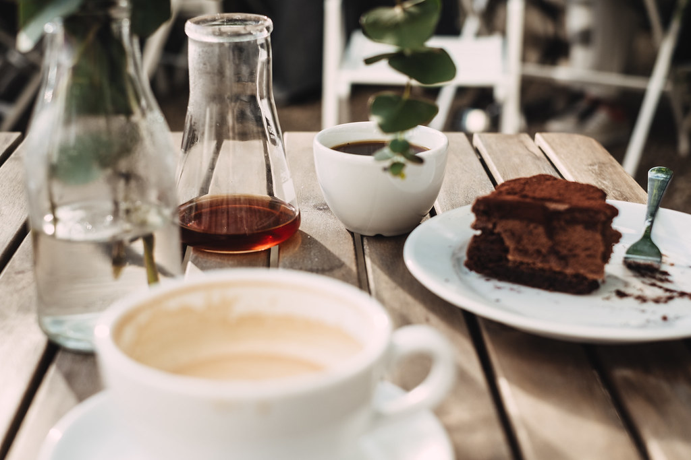
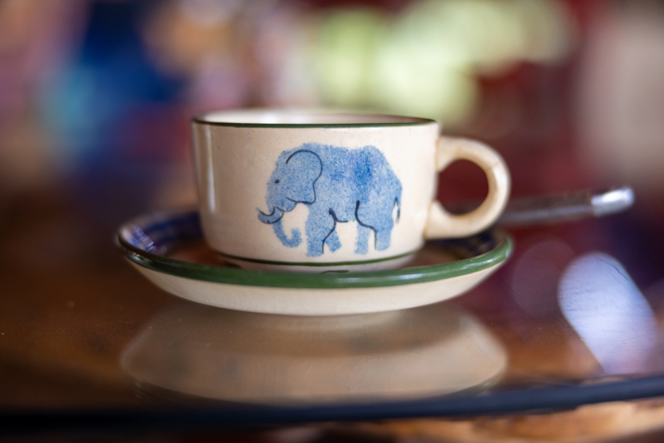
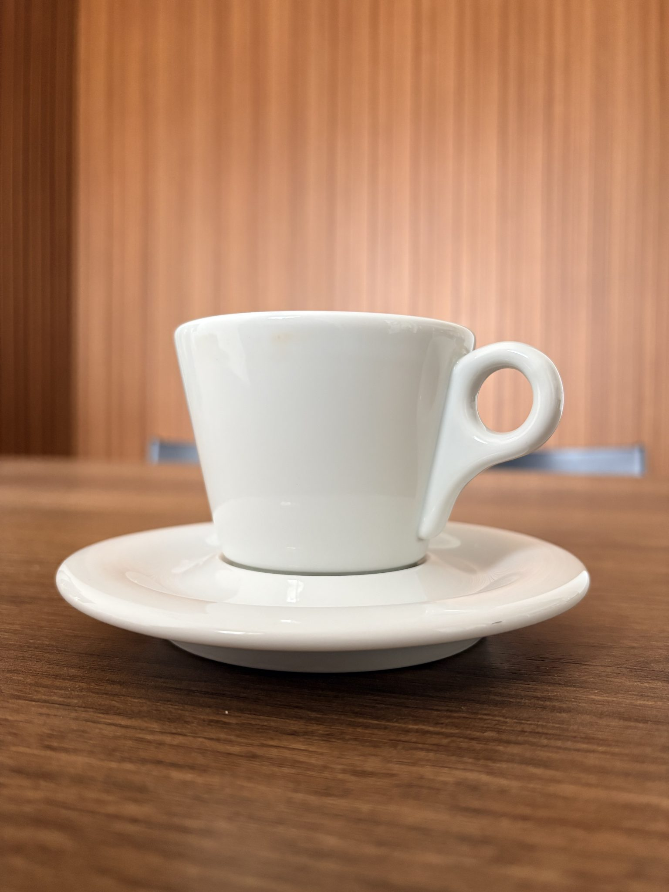
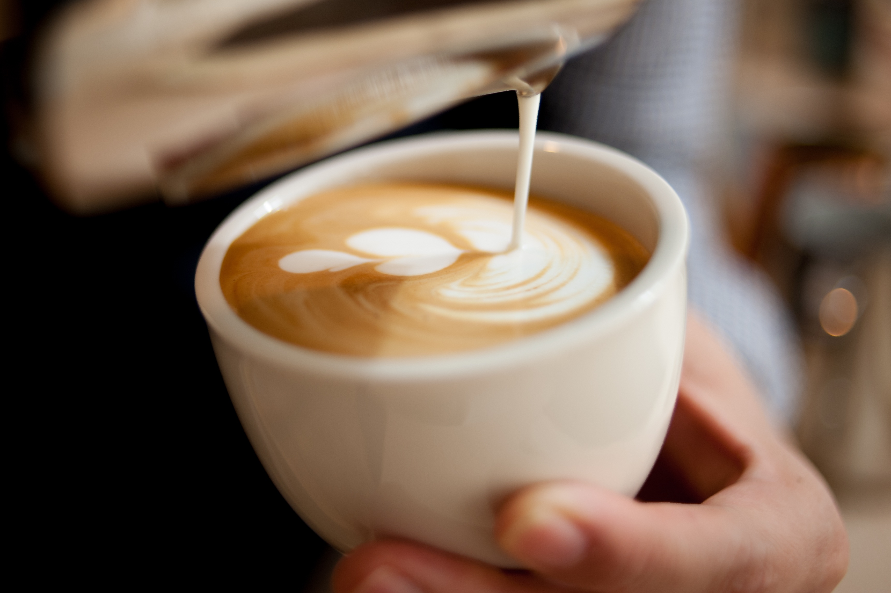
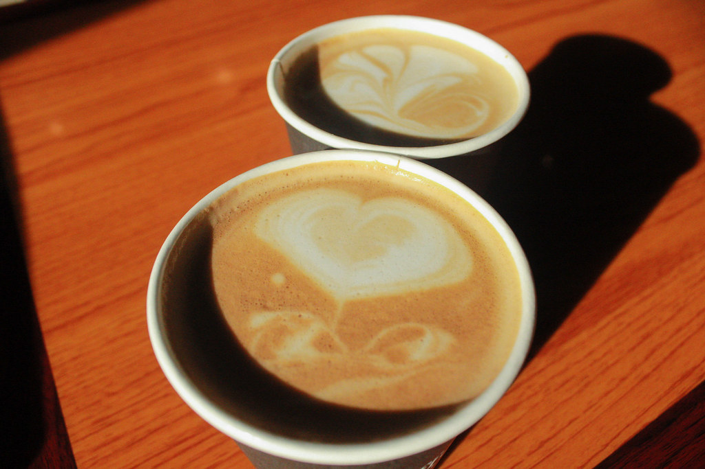
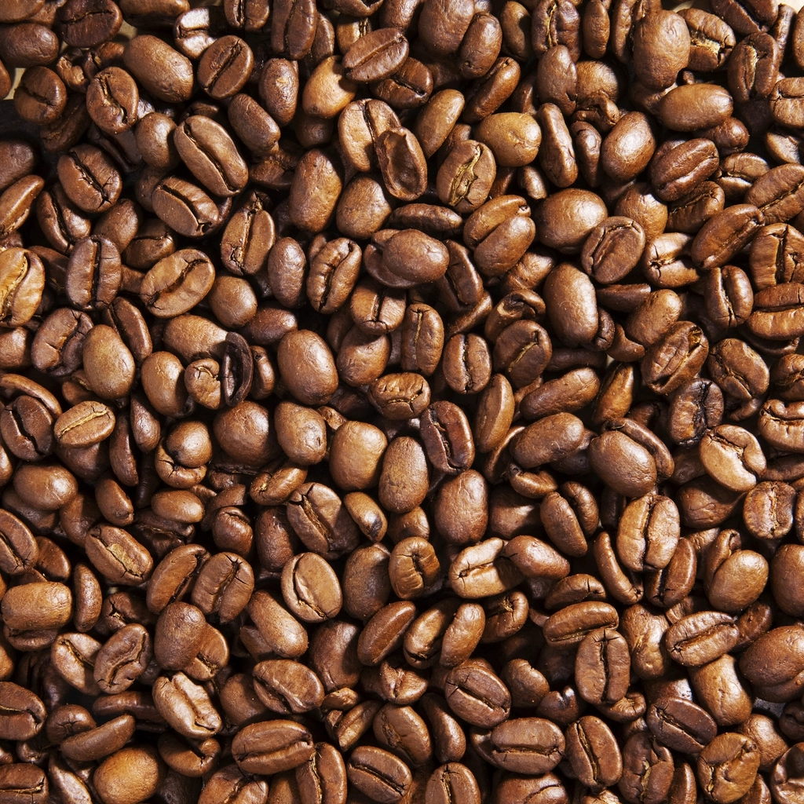
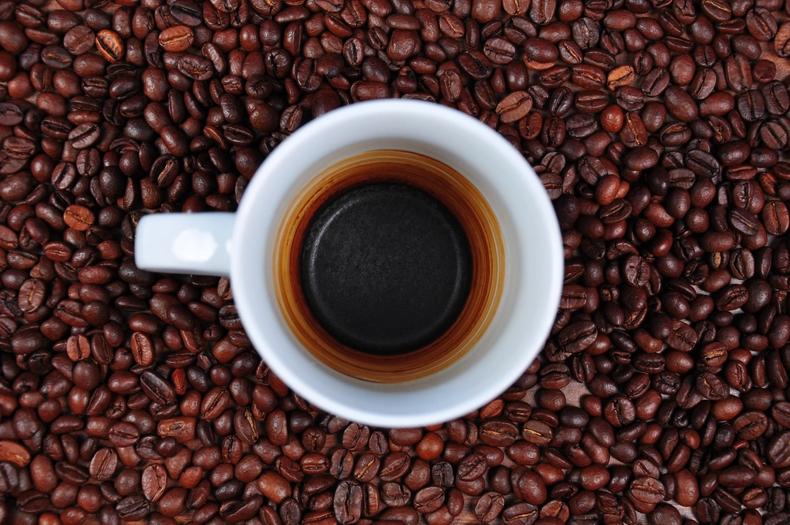
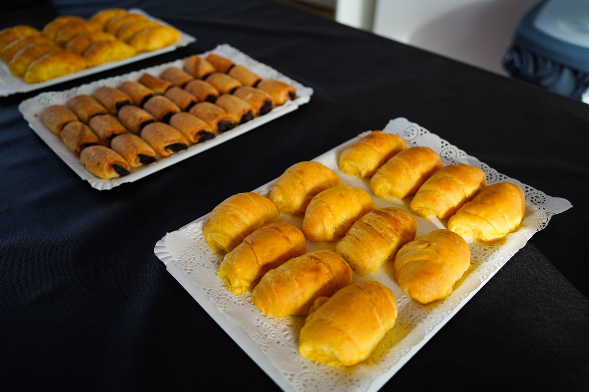
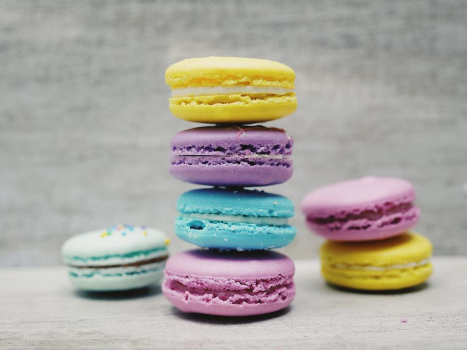

ギャラリー
山・緑・空間の雰囲気をイメージ写真でご紹介します。(写真はOpenverseのフリー素材を使用しています)










写真はフリー素材のイメージです。実際の店内の様子とは異なります。
写真クレジット(Openverse / CC0・PDM)
本サイトで使用している写真は、すべて Openverse(https://openverse.org/)にてライセンスが CC0 または Public Domain Mark であることを確認の上、使用しています。サイト内で使用している全素材の出典は以下の通りです。
| 使用箇所 | タイトル / 提供者 | ライセンス | 出典リンク |
|---|---|---|---|
| TOP ヒーロー(額装写真) | Indoor Table and Chairs / Image Catalog | CC0 | Flickr |
| TOP / 「moksaという名前」 | Tea on the countertop / freestocks.org | CC0 | Flickr |
| TOP / 古民家の空気と、座敷の時間 | Coffee Mug / Matt Bango | CC0 | StockSnap |
| TOP / 音楽が流れる、静かな場所 | 白い陶器カップと木のテーブル / Ludwig You | CC0 | WordPress Photo Directory |
| TOP / 一杯に、心を込めて | Latte art 3 / Kim Sanso | CC0 | Wikimedia Commons |
| TOP / nav-tile(moksaについて) | a cup of coffee, a flower and a laptop / freestocks.org | CC0 | Flickr |
| TOP / nav-tile(コーヒー) | Free coffee beans closeup photo / rawpixel | CC0 | rawpixel.com |
| TOP / nav-tile(ギャラリー) | Three trays of freshly baked pastries / Nilo Velez | CC0 | WordPress Photo Directory |
| TOP / nav-tile(アクセス) | Free coffee beans closeup photo / rawpixel | CC0 | rawpixel.com |
| moksaについて / 南伊豆の山の中で | a cup of coffee, a flower and a laptop / freestocks.org | CC0 | Flickr |
| moksaについて / 古民家の空気、手作りの居心地(1枚目) | Coffee and chocolate cake / freestocks.org | CC0 | Flickr |
| moksaについて / 古民家の空気、手作りの居心地(2枚目) | Free coffee cup wooden table / rawpixel | CC0 | rawpixel.com |
| コーヒー / 豆を選ぶ | Free coffee beans closeup photo / rawpixel | CC0 | rawpixel.com |
| コーヒー / 丁寧に淹れる | Latte Art / Burst | CC0 | StockSnap |
| コーヒー / 一杯が届く | Latte Art-6 / Simply Social | PDM | Flickr |
| コーヒー / 午前中は、カプチーノを | Free coffee latte art image / rawpixel | CC0 | rawpixel.com |
| コーヒー / 持ち帰って、山の時間を | Free coffee beans closeup photo / rawpixel | CC0 | rawpixel.com |
| アクセス / og:image・nav-tile | Free coffee beans closeup photo / rawpixel | CC0 | rawpixel.com |
| ギャラリー / 光が差し込む木のテーブルと椅子 | Indoor Table and Chairs / Image Catalog | CC0 | Flickr |
| ギャラリー / 木のテーブルで過ごす時間 | Coffee and chocolate cake / freestocks.org | CC0 | Flickr |
| ギャラリー / 陶器カップ(1) | Coffee Mug / Matt Bango | CC0 | StockSnap |
| ギャラリー / 陶器カップ(2) | 白い陶器カップと木のテーブル / Ludwig You | CC0 | WordPress Photo Directory |
| ギャラリー / ラテアート(1) | Latte art 3 / Kim Sanso | CC0 | Wikimedia Commons |
| ギャラリー / ラテアート(2) | Latte Art-6 / Simply Social | PDM | Flickr |
| ギャラリー / 珈琲豆(1) | Free coffee beans closeup photo / rawpixel | CC0 | rawpixel.com |
| ギャラリー / 珈琲豆(2) | Free coffee beans closeup photo / rawpixel | CC0 | rawpixel.com |
| ギャラリー / 焼き菓子(1) | Three trays of freshly baked pastries / Nilo Velez | CC0 | WordPress Photo Directory |
| ギャラリー / 焼き菓子(2) | Bake Pastry / Eaters Collective | CC0 | StockSnap |
山あいの一軒へ、どうぞ。